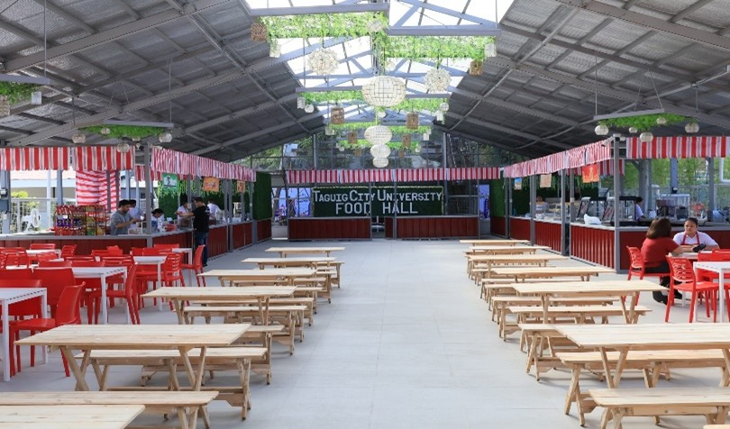
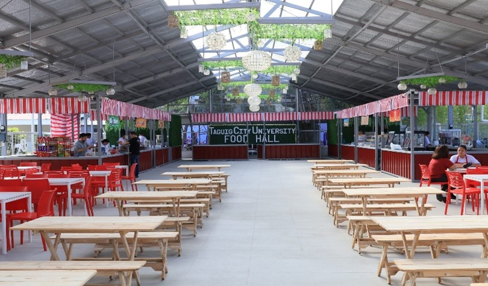

About Pasay City Academy
PCA began as a multi-grade elementary school jointly sponsored by the Pasay English Church and the Pasay Tagalog Church. Initially, classes were held in a "Quonset Hut" behind the Pasay English Church. In 1954, the school moved to a newly constructed two-story wooden building. Over time, it expanded its educational offerings and, in 1958, was registered with the Securities and Exchange Commission as Pasay City Academy. The same year, it received recognition from the Department of Education, Culture, and Sports (DECS).
- Vision - Mission: Vision: Maximizing the intellectual, social, spiritual, physical, and leadership potentials of responsible and globally competent students of Pasay City Academy. Mission: Pushing the boundaries to equip students with lifelong learning skills through intensive and intentional programs and activities that are harmonious with the Adventist international educational system.
- Our Core Values: Mental Development, Physical Development, Spiritual Development, Social Development
Available Levels
- Elementary to Junior High School
Contact Information
Address: PCA Building, Sen. Gil Puyat Ave. Extension, Pasay City, NCR, Philippines 1300.
Phone:8-536-44-76
Email: pca32712@yahoo.com